Water Authority (British Hong Kong), on Y1964-M04-D04 | Memo - Ref 458 in W. W. O. 1487/49 - Pedestal Fire Hydrants (in HKRS287-1-677 Pedestal Fire Hydrants - Installation of Hydrants - Hong Kong) | Public Records Office, Government Records Service (HKSAR Government)
Waterworks Office (British Hong Kong), Y1960-M05 to Y1966-M01 | HKRS287-1-688 Fire Fighting - General Corresp. | Public Records Office, Government Records Service (HKSAR Government)
The Water Supplies Department released the guidelines for painting hydrants on their website. Look for WSD 1.34 - Painting on Fire Hydrant. You can check it out if you are interested in the technical specifications.
Here are the important points:
Serial numbers are to be painted on the hydrants
A 50mm wide, 93.3mm long ⮜ V-shaped arrow head should be painted on the hydrant and point towards the surface box (which houses the hydrant control valve)
If the surface box is more than three metres away from the hydrant, the distance (in metres, rounded to one decimal place) should be painted next to the ⮜ V-shaped arrow head. If the surface box is within three metres, then the distance should not be painted.
Fire hydrants that use fresh water should have its body painted red, with yellow markings
Fire hydrants that use seawater should have its body painted yellow, with red markings
The cap of a Swan Neck and the front cap of "pedestal" hydrants should be painted blue if they are installed but not yet in service
If the hydrant is connected to a trunk main, a white band should be painted on the hydrant body
If you are thinking, some of these points don't seem to line up with what we see on hydrants today, and that some things are missing...well, WSD 1.34 was first released on Y1995-M11-D20, and the most recent revision was on Y2003-M09-D05, more than two decades ago. I will list out all the differences I noticed.
Hydrants painted in colours not mentioned in WSD 1.34 - green and teal
In slop posts and articles, green hydrants are said to use processed waste water, but I am yet to find official sources to back this up. I don't think there is any publicly available official source that stipulated the use of green paint (or any other paint that isn't red or yellow) for hydrants using any other water type. So, how did those posts and articles know green hydrants use processed waste water? Only they will know, I suppose. Anyway, I am only aware of Round Heads painted in green, more details in this page.
green (pale) Round Head G5
Park Promenade, outside ticket gates of Hong Kong Disneyland
Photo taken in Y2026-M03
green (pale) Round Head C7
Hong Kong Disneyland coach car park southwest corner
Photo taken in Y2026-M08
green Round Head C5
Hong Kong Disneyland coach car park southeast corner
Photo taken in Y2026-M08
As for teal, I don't think there are any discussions regarding the water type it uses, but some social media posts seem to have considered these as being the same as green hydrants. It is possible that teal and green hydrants use the same type of water as some green Round Heads at the Fire and Ambulance Services Academy were repainted teal. But again, no idea what water teal hydrants uses. And again, I am only aware of Round Heads painted in teal, more details here.
Teal Round Head DH4
Hong Kong Disneyland Hotel emergency vehiclular access at southeast corner of West Lawn
Photo taken in Y2026-M08
Teal Round Head DH5
Hong Kong Disneyland Hotel emergency vehiclular access near White Gazebo
Photo taken in Y2026-M03
Teal Round Head DH6
Hong Kong Disneyland Hotel
Photo taken in Y2026-M08
red Round Head 14 and teal Round Head 18
Fire and Ambulance Services Academy
Photo taken in Y2026-M05
Hydrants painted in colours not mentioned in WSD 1.34 - lavender
In online discussions about lavender Round Heads in the North District, some netizens suggested that hydrants painted lavender use reclaimed water. While WSD 1.34 doesn't mention lavender, these netizens might be correct. Reclaimed water is a type of recycled water, and a Water Supplies Department document about recycled water stipulated that recycled water pipes should be purple or lavender. The Shek Wu Hui water reclamation plant in the North District entered service in 2024, and the Water Supplies Department began providing reclaimed water in Sheung Shui and Fanling for toilet flushing in the same year. The water reclamation plant is literally on the other side of the road from the San Wan Road × San Po Street lavender Round Head (no hydrant at that location before). With all these facts in mind, I think it is reasonable to assume that hydrants painted lavender use reclaimed water.
However, when some official sources (such as news.gov.hk) and news media talk about reclaimed water usage, they usually mention toilet flushing, road cleaning, and park irrigation prominently, neglecting other possible usages. This lead to some news media incorrectly claiming that these lavender hydrants will not be used for firefighting. This is a really ridiculous claim, why would the Water Supplies Department and/or Fire Services Department went to the trouble of installing these hydrants if they do not intend to use it for firefighting? Those taps we see in parks and on pedestrian footpaths will be sufficient for road cleaning and irrigation. Besides, fire hydrant have to be tested regularly (for things like water pressure) to ensure their effectiveness in case of fires. Installing fire hydrant for road cleaning or irrigation is just overkill and wasteful of resources. And you need special tools to use a fire hydrants (such as a hydrant key), this is to prevent hydrants from being misused. Of course, I am not saying fire hydrants will never be used for non-firefighting purposes, I have seen small work sites (such as waterworks, drainage works, and footbridge lift construction) use water from fire hydrants by connecting a hose to the hydrant. But at the end of the day, firefighting is the main purposes of fire hydrants. In the Drainage Services Department and GovHK webpages about reclaimed water, firefighting is clearly stated as one of the ways to use reclaimed water. All I want to say with this wall of text is that, if the departments installed a fire hydrant, then its main purpose is to fight fires, it is silly to suggest otherwise. If you want to find lavender hydrants that are yet to be discovered in the North District, you can check out roads where reclaimed water pipes are laid. You can find a map showing the proposed reclaimed water pipe network at the Water Supplies Department webpage about the "Reclaimed Water Supply to Sheung Shui and Fanling" project. Note that this map may not show all the reclaimed water pipes as it is likely an early draft. In fact, the map does not show reclaimed water pipes at the locations of all three known lavender Round Heads mentioned in the Round Head page. I believe the project scope was expanded at some point to cover these areas but the draft map was never updated. I am not sure about the type of water used by lavender Round Heads in Hong Kong Disneyland though, I can't find any water processing plant near Disneyland on maps.
San Wan Road at San Po Street
Photo taken in Y2026-M05
Ching Hiu Road pedestrian crossing outside Ching Ho Shopping Centre shop number 1
Photo taken in Y2026-M07
Ching Shing Road outside Elegantia College
Photo taken in Y2026-M03
Hydrants painted in colours not mentioned in WSD 1.34 - silver
If you search for "silver hydrants" online, you will likely find slop claiming that new hydrants not yet in service will be painted silver. But again, WSD 1.34 didn't stipulate that. I believe the actual reason for the silver colour is that it is the colour of the primer coating, there are primers that appear silver. I believe these hydrants are not intentionally painted silver because of any guideline or requirement, but simply a need to apply some sort of coating to prevent rust and make application of actual paint easier. From what I know, primer is not meant to be a permanent type of coating so you would expect actual paint be applied as soon as possible, which means it is hard to find hydrants painted primer silver. But as mentioned in the Round Head page, there are several Round Heads in the North District that have had their primer coating for months.
Choi Shun Street outside Hi-Tech Centre
Photo taken in Y2026-M05
San Wan Road outside former KMB bus depot in Sheung Shui
Photo taken in Y2026-M05
Ping Kong Road at TWGHs Ma Kam Chan Memorial Primary School carpark entrance (this hydrant used to be north of lamp post GD3281, but it was moved a few metres south and has been south of GD3281 since Y2026-M05)
Photo taken in Y2026-M07 after it moved south
Red Round Head 14106 with peeled red paint, showing silver colour primer coating underneath.
Ping Kong Rd outside TWGHs Ma Kam Chan Memorial Primary School
Photo taken in Y2026-M07
Hydrants painted in colours not mentioned in WSD 1.34 - grey
I believe grey is another primer used on hydrants, which can be seen if you are lucky, or if the upper layer paint of a painted hydrant faded away. Some people online call this colour white, but I will call this primer grey to avoid confusion with the white bands which I will discuss later in this page (also, compared to the white band, the colour of this primer is not as white).
Unnumbered primer grey Round Head with caps painted blue, which means it is not in service. It is still not in service as of Y2026-M09
Nathan Road at Mau Lam Street
Photo taken in Y2026-M05
primer grey Round Head, number currently unknown
Boundary Street at Embankment Road, near Heavy Draw-off hydrant 28202
Photo taken in Y2026-M08
Red Round Head 7806 with fading red paint, showing grey colour primer coating underneath.
Chatham Road North at Baker St
Photo taken in Y2026-M07
There was actually a historic precedent for painting hydrants grey when they have been installed but not yet in service. On Y1964-M04-D03, the Water Authority (Water Supplies Department didn't exist at that time) sent a memo to the director of Fire Services regarding five fire hydrants numbered 567 to 571, which had been installed and were being fed by a pumping station without continuous supply outside pumping period at the time. These hydrants must be installed before continuous supply was available because the installation had to happen when the road was being reconstructed. What the Water Authority did was to paint 567 to 571 grey to differentiate them from other fresh water and salt water hydrants. They would be repainted red when a reliable source of fresh water was expected to be available by the end of 1964. However, I am not sure if the shade of grey used in 1964 is the same as the primer grey we see today, and the 1964 memo also did not mention if the temporary grey was actual paint or just a primer coating.
Hydrants painted in colours not mentioned in WSD 1.34 - black
an unnumbered black custom hydrant that looks like a Swan Neck
50 To Fung Shan Road at the entrance of Lutheran Theological Seminary
Photo taken in Y2026-M04
Painting caps blue
WSD 1.34 said to paint just the front cap of a hydrant, and only when it is newly installed. But nowadays, we often see hydrants with all caps painted blue, not just the front cap. Also, it seems painting caps blue has evolved to mean that a hydrant is out of service temporarily, regardless of whether it is new or old. For example, the Swan Neck previously numbered 69 (now it is numbered 30249) had its cap painted blue for a few years when it was obstructed and couldn't be used due to some construction behind it, but it had already existed for years before its cap was temporarily painted blue.
Another example is "Octagonal hydrant" 30089 (previously 134), which had all its caps painted blue at some point between Y2016-M12 and Y2020-M10. Google Map street view's earliest capture in Y2009-M01 showed this hydrant, and we know "Octagonal hydrant" is an old hydrant type so it is very likely to have existed for a few decades before that. It is as "not newly installed" as you can get. And of course, there is the Heavy Draw-off hydrant 30499 (previously 3), with all twelve of its caps painted blue despite the Heavy Draw-off hydrant type being a product of the 1960s~1970s.
Last but not least, there is an interesting Round Head, which was painted red but there is only a small patch of blue spray-painted on the top of it. It did not exist in the most recent 2024 Google Maps street view capture so it is definitely new, in fact it does not even show up in GeoInfo Map. This definitely does not comply with neither the WSD 1.34 requirements nor the modern practices. Seriously, just how hard is it to spray-paint the front cap...
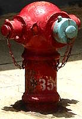
red Round Head 854 with its front cap painted blue (a slightly lighter shade of blue)
Holland Street at Praya Kennedy Town
Photo taken in Y2026-M07
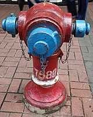
red Round Head 7589 with all caps painted blue and white band painted on the hydrant
Shantung Street at Nathan Road
Photo taken in Y2026-M0
red Octagonal hydrant 30089 (previously 134) with all caps painted blue (a slightly lighter shade of blue)
Shau Kei Wan Road at Tai Lok Street
Photo taken in Y2026-M07
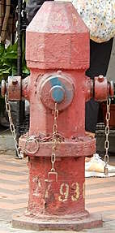
red Octagonal hydrant 27930 (previously 114) with all caps temporarily painted blue
Yuen Ngai Street at Prince Edward Road West
Photo taken in Y2026-M08
red Heavy Draw-off hydrant 30499 (previously 3), with all caps painted blue
Lyndhurst Terrace at Hollywood Road
Photo taken in Y2026-M03
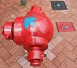
An unnumbered red Round Head with a patch of blue on top
Garden Road at Tramway Lane
Photo taken in Y2026-M07
The white band
The wording is slightly different between official sources, with WSD 1.34 saying "connected to a trunk main" and the Fire Services Department's street hydrant testing and commissioning checklist saying "fed directly from government trunk main". Sometimes you see online slop claim that hydrants with white band means they can be used even during water rationing periods. I don't know enough about waterworks to say if connected to trunk main / government trunk main = no water restriction during rationing periods. There was at least one mention of trunk mains being "charged 24 hours" in old Fire Services and Water Authority documents though.
If the white bands are really for identifying hydrants during water rationing periods, then it would mean there is no need to paint white bands on hydrants as water rationing are not likely to happen in the future (fingers crossed). But then, we have some relatively new hydrants painted with white bands, such as the FH prefix Round Heads in West Kowloon Art Park.
Even though WSD 1.34 only showed examples of how the white band can be applied to Round Head and Swan Neck, I haven't seen a Swan Neck with white band yet. There were photos of some red Heavy Draw-off hydrants having white bands in the past, but you can't see white bands on these hydrants in 2026 anymore.
red Round Head FH16 with white band painted on the hydrant and unpainted connector pieces
opposite of 852 Convenience Store in Art Park
Photo taken in Y2026-M08
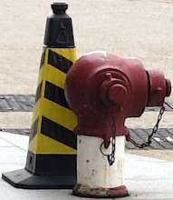
red Round Head STH-04 with a thick white band painted on the hydrant
Airport Expo Boulevard outside AsiaWorld-Expo east lobby entrance
Photo taken in Y2026-M06
red Round Head 31082 with red hydraulic test cap with handles on one of its side nozzles and white band painted on the hydrant
Chai Wan Road near A Kung Ngam Road bus stop
Photo taken in Y2026-M08
red Octagonal hydrant 28564 (previously 837) with a white band painted on the hydrant
Ho Tung Road at Boundary Street
Photo taken in Y2026-M04
red Round Head 7589 with all caps painted blue and white band painted on the hydrant
Shantung Street at Nathan Road
Photo taken in Y2026-M0
The big numbers painted on the hydrants now are not serial numbers
If those are serial numbers, then each number should be unique to each hydrant, but that is not the case. There are many cases of hydrants sharing numbers. More details on hydrant numbers in this page.
Non-standard hydrant markings colour
Even though WSD 1.34 stipulated yellow markings for red hydrants, it is not uncommon to see white markings on red hydrants. While technically non-standard, it is not that big of an issue. But how about something more radical...like black? For some reason, the red Round Heads at Riviera Gardens housing estate have black markings. To top it all off, there is no ⮜ arrow head on top of the hydrant, they just repeated hydrant number and painted that on top (pun very much intended).
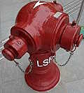
red Round Head LSK-02, white markings
near Shaw Auditorium in Hong Kong University of Science and Technology
Photo taken in Y2026-M05
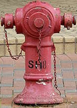
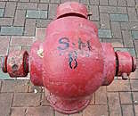
red Round Head SH8, black markings
Yi Lok Street at Wing Shun Street (Riviera Gardens)
Photos taken in Y2026-M09
Non-standard arrow heads
There are many examples of non-standard arrow head, most of which that I found look like ←. There are also examples with a bigger ←, such as Round Head SFH-01 outside Junk Bay Chinese Permanent Cemetery section A39 columnbarium (known as 崇孝樓 in Chinese). This Round Head even has a plaque by its manufacturer, stating that the manufacturing of this Round Head complied with WSD 1.54 (standard drawings of Round Head), but ironically the markings do not comply with the other standard drawing discussed here - WSD 1.34. But of all the non-standard arrows, my favourite has to be the oversized big ⮜ arrows on top of some Round Heads.
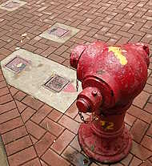
red Round Head ECY12, with non-standard ← arrow on top
behind Choi Wu House near Fanling Highway, Choi Yuen Estate
Photo taken in Y2026-M05
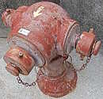
an unnumbered red Round Head, with non-standard ← arrow on top
Kennedy Roa at Hong Kong Visual Arts Centre
Photo taken in Y2026-M04
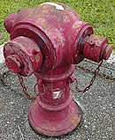
red Round Head 7, with non-standard ← arrow on top
North District Hospital near Fan Kam Road
Photo taken in Y2026-M05
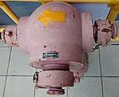
red Round Head SFH-01, with non-standard ← arrow on top
Junk Bay Chinese Permanent Cemetery section A39 columnbarium (崇孝樓)
Photo taken in Y2026-M07
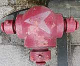
an unnumbered red Round Head, with non-standard gigantic ⮜ arrow on top
outside Harbour North Phase 2
Photo taken in Y2026-M07
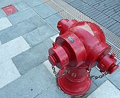
red Round Head SFH 008 (not in GeoInfo Map), with non-standard gigantic ⮜ arrow on top pointing away from the valve
outside Kai Tak Mall 2
Photo taken in Y2026-M09
Non-standard surface box distance marking
I don't think there are many cases where a surface box is more than three metres away from the hydrant, in fact I have only seen the distance markings a few times...and none were done the right way. The first example is red Round Head SFH-01 outside Hong Kong International School, on which a simple "1" was painted next to the arrow. I am not sure if the WSD 1.34 requirement to round distance to one decimal place means it should be "1.0", so I will not make further comments on that. But if you remember, the distance markings shouldn't have been painted at all if the surface box is less than three metres away. The same can be said for two red Round Heads outside Kai Tak Hospital: 13804 and one that I have not figured out the number of, which have 1.8 and 2.4 painted next to the arrows respectively.
As for Round Head 27244, I think the distance between 27244 (409 at the time) and its valve was 3.9 before the pedestrian crossing was widened, and whoever painted the distance markings misunderstood the requirement and painted 0.9 (3.9-3). Perhaps the distance markings were never updated even after the Round Head was moved further away as a result of the widened crossing.
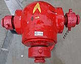
top view of red Round Head SFH-01, with excessive non-standard distance marking indicating the surface box's distance from the hydrant
Tai Tam Reservoir Road outside Hong Kong International School
Photo taken in Y2026-M07
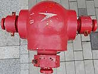
top view of red Round Head 13804 (not shown in GeoInfo Map) with excessive non-standard distance marking indicating the surface box's distance from the hydrant
Shing Cheong Road northwest-bound lanes outside Kai Tak Hospital
Photo taken in Y2026-M08
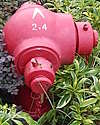
top view of red Round Head (not shown in GeoInfo Map) with excessive non-standard distance marking indicating the surface box's distance from the hydrant
Shing Cheong Road northwest-bound lanes outside Kai Tak Hospital near an unused bus stop
Photo taken in Y2026-M08
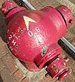
red Round Head 27244 (previously 409), which is installed approximately 10 metres away from its valve, but the distance marking is 0.9
Public Square Street between Arthur Street and Nathan Road